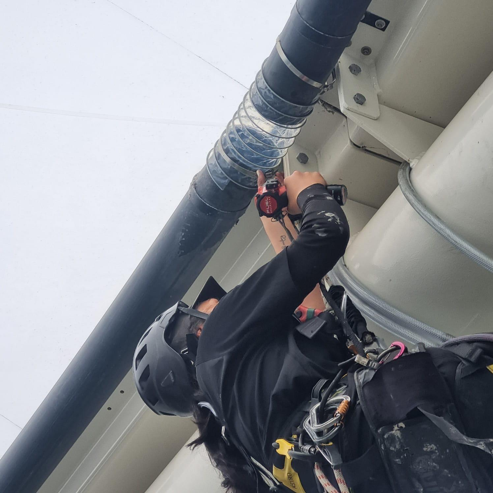

Safety Isn't
Optional.
At A-Z Access Solutions, safety is at the core of everything we do. Every project is planned, documented, and carried out with care.
Planned, Documented, Controlled
At A-Z Access Solutions, safety is at the core of everything we do. We apply industry best practices and proven rope access techniques to deliver efficient, high-quality work while maintaining the highest standards of health and safety.
Every project begins with thorough planning. Before work starts, we prepare a site-specific risk assessment, a detailed method statement, and a comprehensive rescue plan tailored to the task and environment. Our equipment is inspected before and after every use, with all inspections and maintenance recorded in our equipment register to ensure ongoing reliability and compliance.
We operate in accordance with New Zealand's Health and Safety at Work Act 2015 and maintain a comprehensive Health and Safety Management System that supports every stage of a project, from pre-job planning and hazard management through to incident reporting, investigation, and continuous improvement.

Our commitment is simple: to protect our team, our clients, and the public while delivering safe, professional rope access solutions every time.
Every job starts with a method statement, risk assessment, and rescue plan. No exceptions. These are completed before we set foot on site.
All rope access equipment is inspected before and after every use, recorded in our register, and retired at the end of its service life, never pushed beyond limits.
Every technician on site holds current IRATA certification. Levels are matched to the task, L3 supervisors oversee all jobs and are responsible for the safety of the team.
A rescue plan is written for every job before work begins. Our technicians are trained and drilled in rescue procedures so that if something goes wrong, we're ready.
All incidents and near misses, no matter how minor, are documented and reviewed. We learn from everything and feed that learning back into how we work.
Our H&S management system is a living document. We review it regularly, update it when we learn something new, and hold ourselves to a higher standard every year.